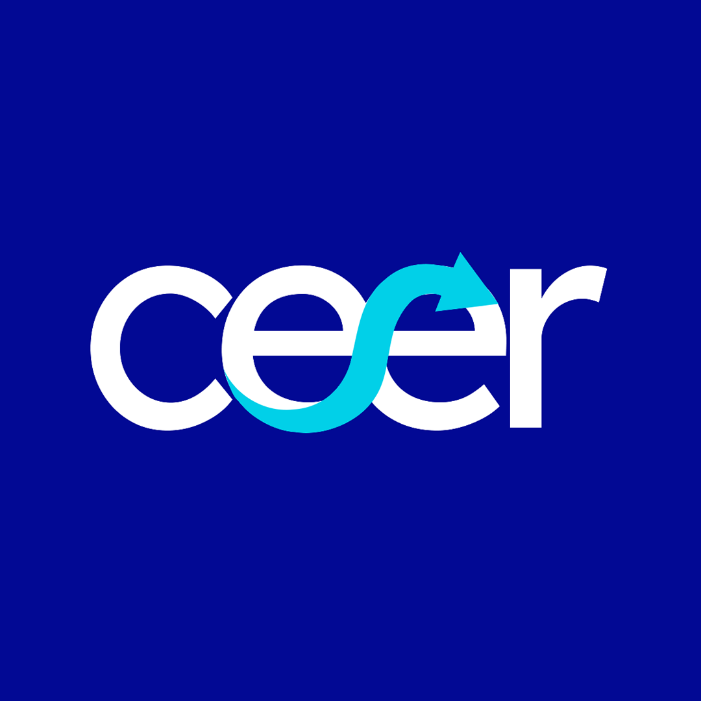

Sobre Cíclica
Cíclica es la revista de los Centros de Estudios Renovación. Un espacio de divulgación que reúne las voces de todos nuestros centros para acercar el análisis político, económico y social al debate público.

Cíclica es la revista de los Centros de Estudios Renovación. Un espacio de divulgación que reúne las voces de todos nuestros centros para acercar el análisis político, económico y social al debate público.
Las voces de todos los centros en un solo lugar
Artículos de fondo sobre economía, política y relaciones internacionales escritos por los investigadores de todos los centros.
Lecturas rápidas sobre la actualidad para entender lo que pasa sin perder el hilo del debate político y social.
Propuestas, debates y perspectivas que buscan trascender la contingencia y contribuir a la construcción de un proyecto político sólido.
Las últimas entregas de Cíclica